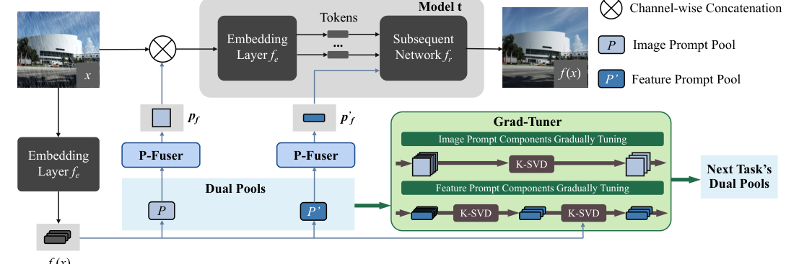
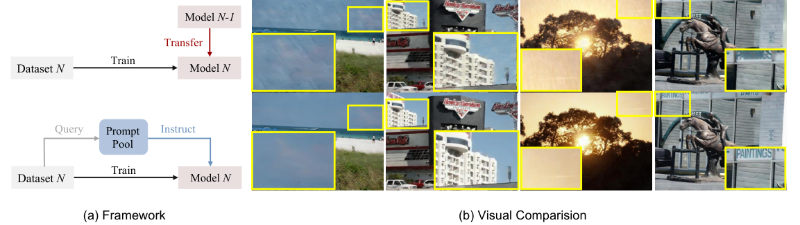
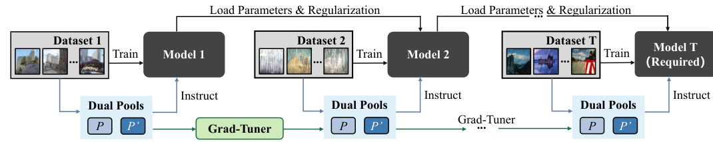
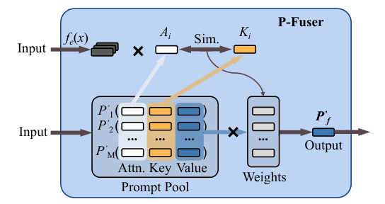
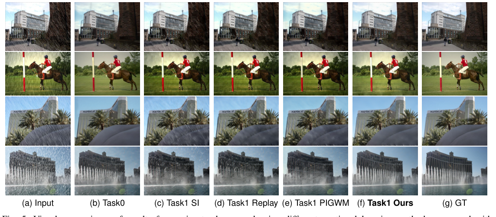
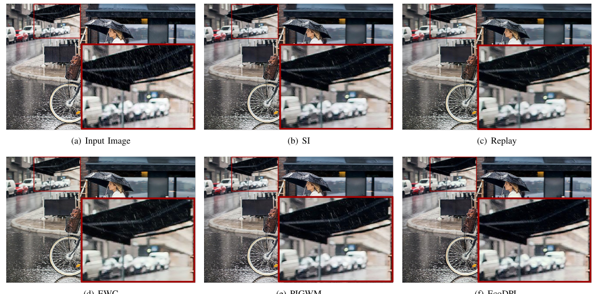
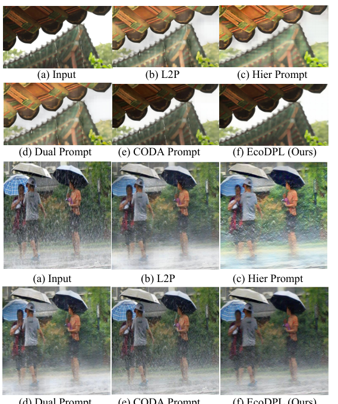
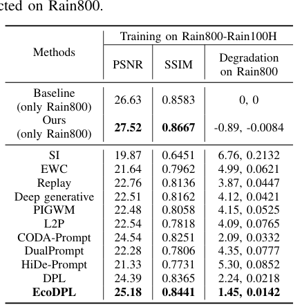
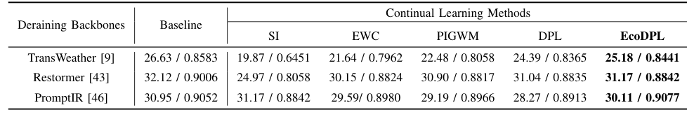
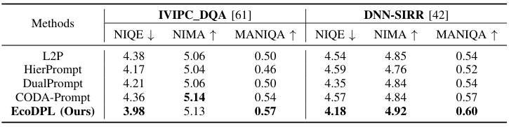

Prompt-Based Continual De-Raining
A prompt-learning continual model tailored for low-level rain removal, using fixed additional parameters rather than expanding a full model for every task.
IEEE Transactions on Image Processing, 2026
Peking University · Pengcheng Laboratory

Abstract
Single-image rain removal has advanced rapidly, but most methods still assume a static data distribution. In real scenes, rain patterns change with season, geography, camera, and weather intensity, so a de-raining model must learn new degradations without catastrophically forgetting old ones.
We propose Evolving COmpact Dual Prompt Learning (EcoDPL), a rehearsal-free continual learning framework for low-level vision. EcoDPL maintains two prompt pools at the image and feature levels, inserts them into images and embedding tokens, and uses P-Fuser to generate adaptive attention-aware prompt weights for each input.
To keep knowledge compact, Grad-Tuner compresses learned knowledge into fewer prompts through a gradually tuned dictionary learning strategy, freeing space for future tasks while preserving useful de-raining behavior. Across synthetic and real-world benchmarks, EcoDPL consistently improves continual rain removal and remains effective under stationary data.
Highlights
A prompt-learning continual model tailored for low-level rain removal, using fixed additional parameters rather than expanding a full model for every task.
Image-level prompts capture local restoration cues, while feature-level prompts guide higher-level representation transfer across evolving rain types.
An adaptive weight generation module assigns attention maps to prompts, allowing different inputs to receive flexible prompt combinations.
A dictionary-learning compression strategy packs useful knowledge into fewer prompts, leaving capacity for new tasks in continual learning.
Method



Results
Average PSNR / SSIM with EcoDPL.
Grad-Tuner compresses old knowledge before learning new tasks.
Validated with TransWeather, Restormer, and PromptIR backbones.






Resources
Citation
@article{liu2026prompting,
title={Prompting Rain Off: Evolving Compact Dual Prompts for Continual De-Raining},
author={Liu, Minghao and Yang, Wenhan and Liu, Jiaying},
journal={IEEE Transactions on Image Processing},
year={2026}
}